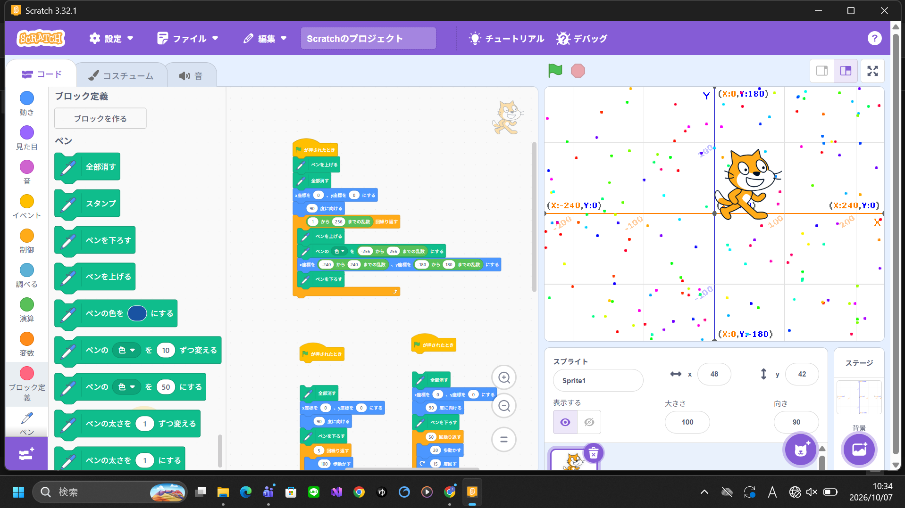
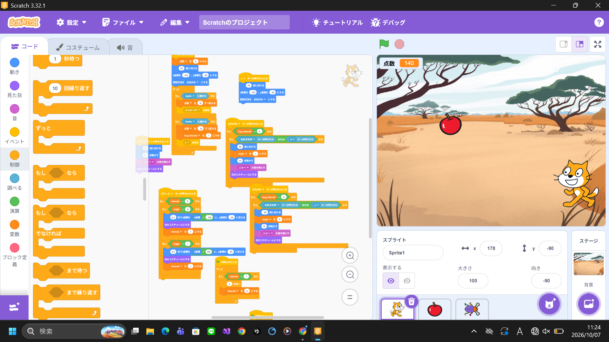

1週目のレポート ： 公大高専１年実習I-1
4b班23番 ykt
第1週目
1-1 サイエンスアート

1.内容
学習した内容を説明する文章を
スクラッチを使って、プログラミングの仕方を学び、実際に絵を描くプログラムを組んだ。
また、自分で工夫して自分だけのアートをプログラミングで作った。
2.感想
小学校や中学校で何回かScratchを使ったことがあったから、
ある程度慣れてて簡単だった。文字でのプログラミングもしてみたいと思った。
1-2 ゲーム

1.内容
学習した内容を説明する文章を
スクラッチを使って、ミニゲームを作った。猫とリンゴにそれぞれ動きのプログラムを組んで、拾う処理を書いた。
背景やスプライトを新たに追加した。変数を使って得点を表示した。
2.感想
ちゃんとゲームっぽいものを作ったことがなかったから楽しかった。
工夫次第でこのゲームをもっと面白くできそうだなと思った。
1-3 ホームページ作成
私のホームページ
1.内容
githubのアカウントを作り、所定の場所からforkした。
ファイルを編集し方を学んで、ホームページの文言を変えて自己紹介を作った。
2.感想
ホームページは作ったことなかったからすごい新鮮で楽しかった。
htmlとかcssを書くのは難しそうだったけど案外大丈夫だった。
自分でも勉強してみたいなと思った。
各ページへのリンク
私のホームページ
2週目のレポート
3週目のレポート